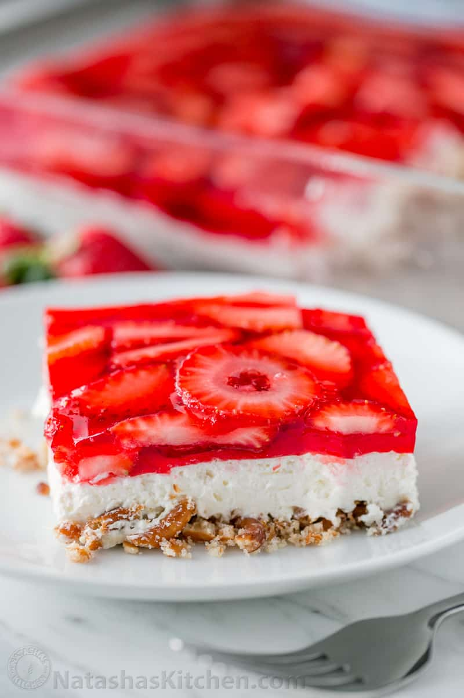

Pretzel Salad
Pretzel Salad

A delicious strawberry dish, very sweet, and good for parties.
Ingredients
- 1 package 6oz of Strawberry Jelly
- 1 containers 16oz of strawberries, sliced
- 2 cups of pretzels, crushed
- 1.5 sticks of butter, melted
- 1 8oz packet of cream cheese
- 1 cup sugar
- 2 cups CoolWhip
- 2 cups crushed pineapple
- 9 x 13 pan
Steps
- Mix 2 cups of crushed pretzel and 1.5 sticks of melted butter, and spread into a 9x13 pan.
- Bake for 10 minutes at 350 degrees, after let cool on the side.
- Mix cream cheese, sugar, and cool whip, after mixed spread over the cooled pretzels
- Heat 2 cups of crushed pineapple, once warmed dissolve 6oz of Strawberry Jello into the pineapple, add in sliced strawberries
- Allow the strawberry mixture to thicken slightly, spread over cream cheese
- Refridgerate for 2-3 hours before serving.
Return to home page